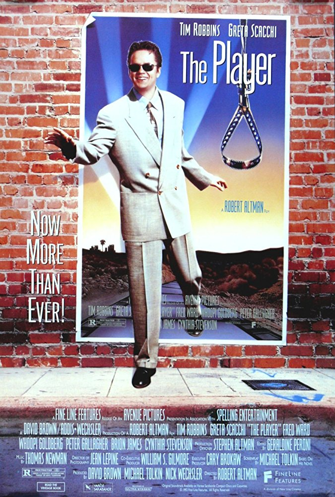

Enjoy Sunday nightat the movies!
Raleigh's oldest and finest nonprofit film society offers classic feature presentations monthly at the Rialto Theatre in Raleigh, NC.
Welcome to The Cinema, Inc.
One of the oldest continuing film societies in the nation, The Cinema, Inc. was founded in 1966 by a group of IBM workers using borrowed projection equipment that was installed in the Raleigh Little Theater. The organization was founded as a nonprofit whose purpose was "the presentation of films of educational, cultural, artistic and historical interest." After about 15 years the organization moved to the Rialto in the city's Five Points neighborhood. The group has been screening selections on the second Sunday of each month ever since. Each screening, which averages over 300 attendees, is accompanied by film notes emailed to members.
Screening This Season!
Screening NEXT
-
 January 12, 2025Directed by Martin Ritt; Starring Richard Burton, Oskar Werner, Claire Bloom
January 12, 2025Directed by Martin Ritt; Starring Richard Burton, Oskar Werner, Claire Bloom
The Spy Who Came in from the Cold
UK, 1965, 112 min, B&W, Not Rated
At the height of the Cold War, a spy (Burton) undertakes one final perilous mission in East Germany to flush out a mole in MI6, nicknamed the "Circus" by insiders. From the acclaimed best-seller by John le Carré, director Ritt captures a world where nothing is black and white; only seemingly endless shades of grey.
-
 February 9, 2025Directed by Sofia Coppola; Starring Bill Murray, Scarlett Johansson, Giovanni Ribisi
February 9, 2025Directed by Sofia Coppola; Starring Bill Murray, Scarlett Johansson, Giovanni Ribisi
Lost in Translation
USA, 2003, 102 min, Color, R
Two lonely, lost Americans adrift in Tokyo meet and forge an unlikely friendship. He is older; an actor whose career is on the skids. She is younger; a wife who has accompanied her husband on a photo shoot. Somehow, miraculously, they see each other, hear each other, get each other in this valentine to the wonders of chance friendships and the city of Tokyo itself.
-

March 9, 2025Directed by Robert Altman; Starring Tim Robbins, Greta Scacchi, Fred Ward
The Player
USA, 1992, 124 min, Color, R
A self-admitted Hollywood player himself, Altman casts a satirical insider's eye at the cutthroat corporate Hollywood world. From its audacious and renowned eight-minute opening tracking shot, through a constellation of stars in cameo roles to its upbeat Hollywood ending, his satire of the morally bereft studio exec remains funny, suspenseful, and hugely entertaining.